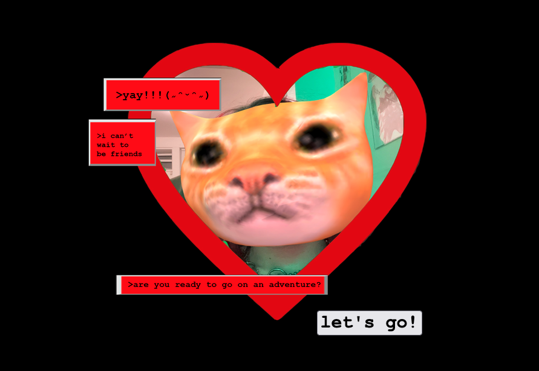

MYSA is an interactive story experience that blends visual storytelling, dialogue, and exploration into a single browser-based game. Rather than focusing on action or challenge, the experience encourages players to slow down, observe their surroundings, and gradually uncover the narrative through conversations and environmental details.
Built entirely with HTML, CSS, and JavaScript, the project explores how web technologies can be used to create immersive interactive experiences. Every scene, transition, and interaction was designed to feel cohesive, creating an experience that sits somewhere between a game, an interactive website, and a digital storybook.